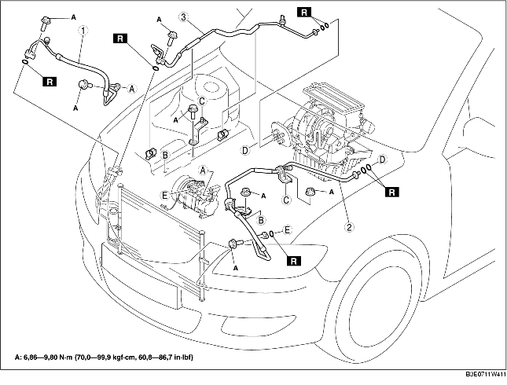

1. Débrancher le câble négatif de la batterie.
2. Décharger le liquide frigorigène du système. (voir la section RÉCUPÉRATION DE RÉFRIGÉRANT.) (voir la section CHARGEMENT DE REFRIGERANT.)
3. Déposer le réservoir de réserve de liquide P/S.
4. Déposer le réservoir de réserve de liquide de refroidissement. (voir la section DEPOSE/REPOSE DE RESERVOIR DE RESERVE DE LIQUIDE DE REFROIDISSEMENT.)
5. Déposer le câble d'accélérateur.
6. Déposer le support de flexible de liquide P/S.
7. Déposer les différents éléments selon l'ordre indiqué dans le tableau. Veiller à ne pas renverser d'huile de compresseur.
8. Pour la repose, suivre l'ordre inverse de la dépose.
9. Effectuer le test de performances du système de réfrigération. (voir la section TEST DE PERFORMANCES DU SYSTEME REFRIGERANT.)

.
|
1
|
Flexible de refroidisseur (HI)
(voir la section Note sur la dépose de conduite de liquide frigorigène)
(voir la section Note sur la repose des conduite de liquide frigorigène)
|
|
2
|
Flexible de refroidisseur (LO)
(voir la section Note sur la dépose de conduite de liquide frigorigène)
(voir la section Note sur la repose des conduite de liquide frigorigène)
|
|
3
|
Tuyau de refroidisseur
(voir la section Note sur la dépose de conduite de liquide frigorigène)
(voir la section Note sur la repose des conduite de liquide frigorigène)
|
1. Débrancher les tuyaux à serrage par boulon en saisissant le côté femelle du boulon avec des pinces ou un outil similaire et en le tenant fermement, puis déposer le boulon ou l'écrou de raccord.
1. Placer l'outil SST.
2. En regardant par le trou d'inspection de l'outil SST, insérer la pièce saillante de l'outil SST jusqu'à ce qu'elle entre en contact avec la section de cuvette.
3. Uiliser l'outil SST pour débrancher le tuyau ou le flexible mâle du tuyau ou flexible femelle en tirant sur le tuyau ou flexible mâle.
1. Enduire les joints toriques d'huile pour compresseur et poser les raccords.
2. Resserrer les joints.
1. Serrer le boulon du raccord à la main.
2. Brancher les tuyaux à serrage par boulon en saisissant le côté femelle du boulon avec des pinces ou un outil similaire et en le tenant fermement, puis serre le boulon ou l'écrou de raccord avec une clé dynamométrique.
1. Brancher le tuyau ou flexible mâle en l'enroulant sur le tuyau femelle jusqu'à ce que le ressort de fixation du tuyau ou flexible mâle soit au-dessus de l'extrémité évasée du tuyau femelle.